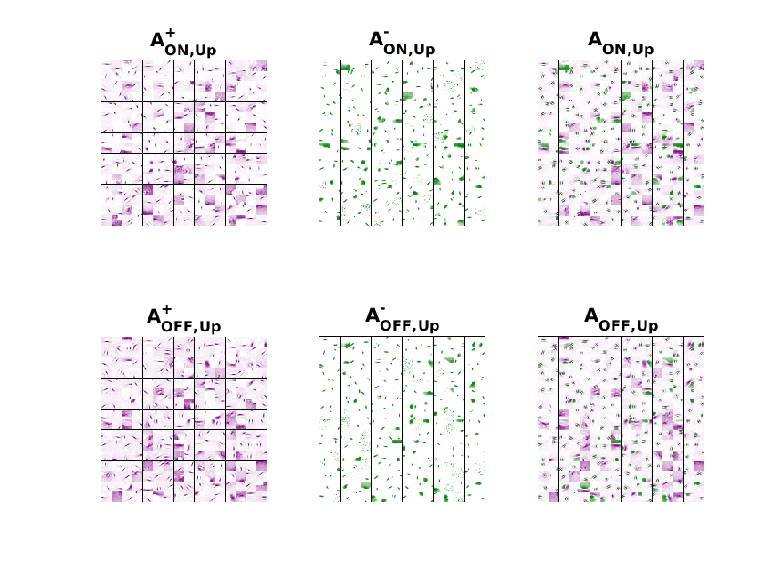
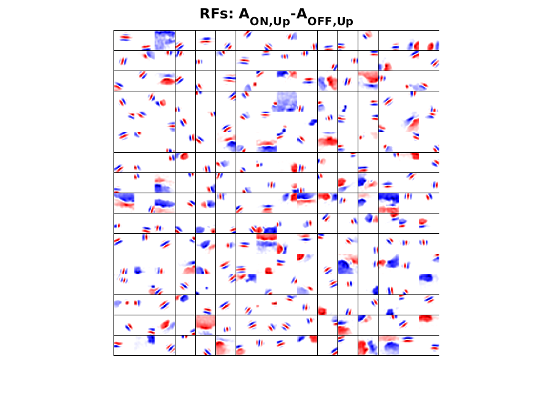
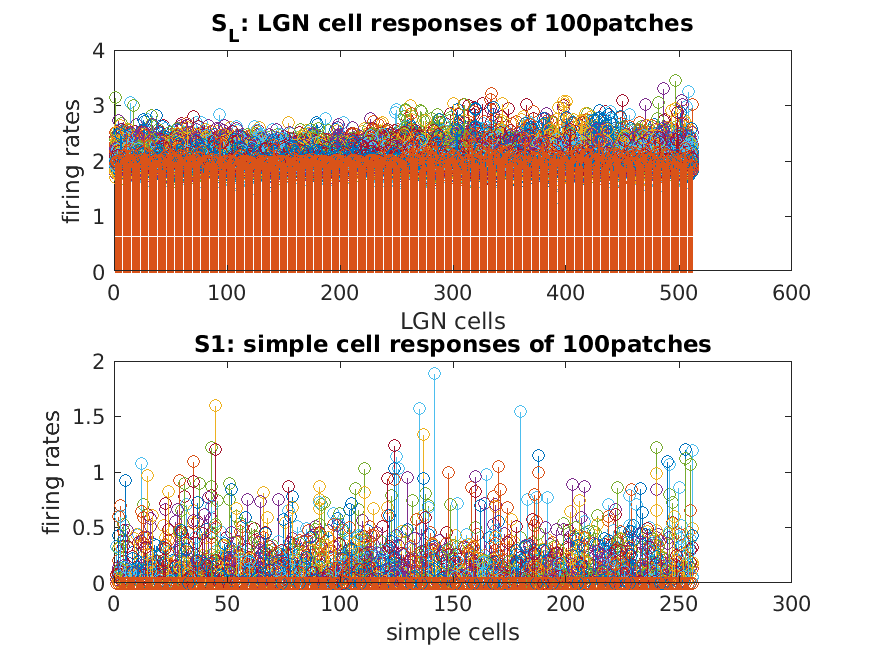
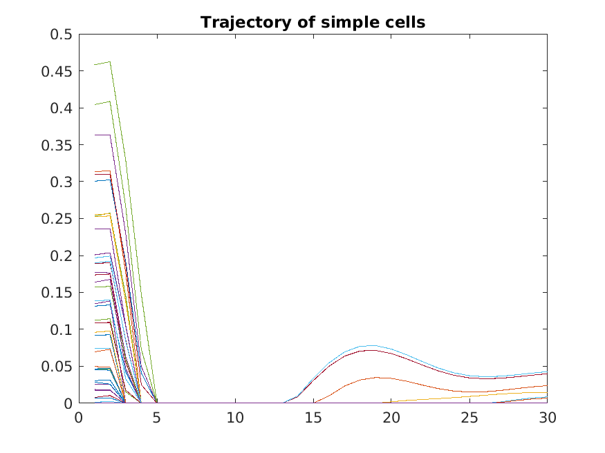

This is the readme for the matlab models associated with the paper:
Lian Y, Grayden DB, Kameneva T, Meffin H, Burkitt AN (2019) Toward a Biologically Plausible Model of LGN-V1 Pathways Based on Efficient Coding Frontiers in Neural Circuits 13:13
http://dx.doi.org/10.3389/fncir.2019.00013
Start the program by typing
LGN_V1_UpDown_PosNeg
on the matlab command prompt. The program runs for an hour or
so updating its progress in the graphs. When it finishes the matlab figures
should look like these:



